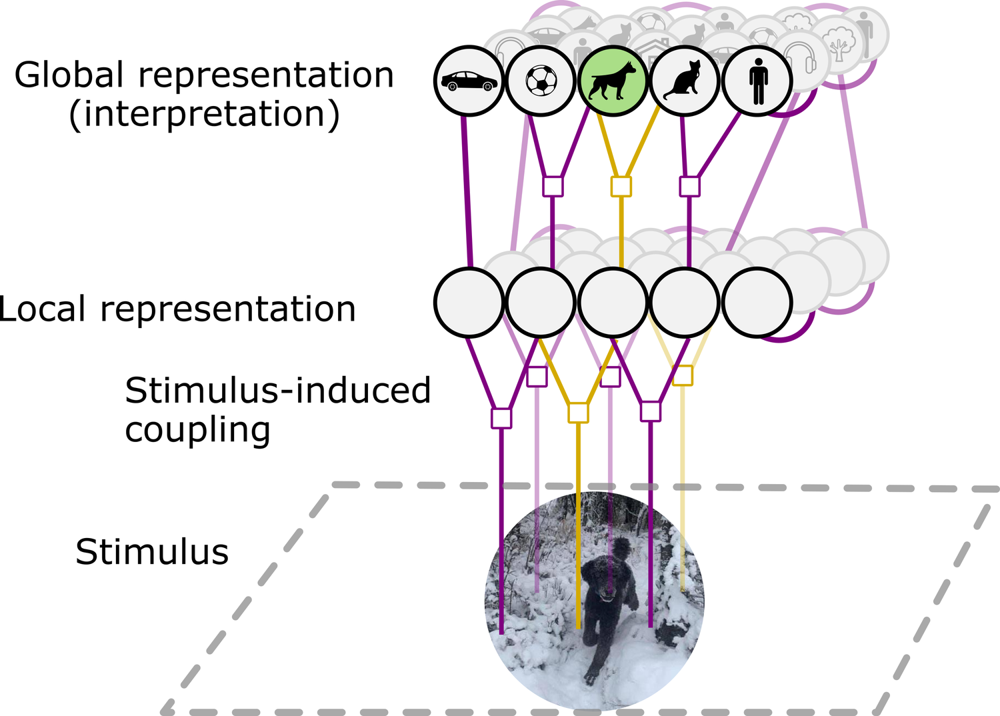

2025–26
When a stimulus is ambiguous — a rotating cylinder, a Necker cube — perception spontaneously alternates between two interpretations. We model this as inference over a probabilistic graphical model with lateral coupling, implemented as a continuous-time RNN. We propose that lateral interactions in the visual hierarchy are dynamically modulated by features of the stimulus, so that normative computations such as explaining away can be performed. Bistable perception, in this view, arises when these lateral interactions become very strong — highlighting their role in representing the statistical associations of the world.

Hierarchical generative model · stimulus-induced lateral coupling shapes the global interpretation.